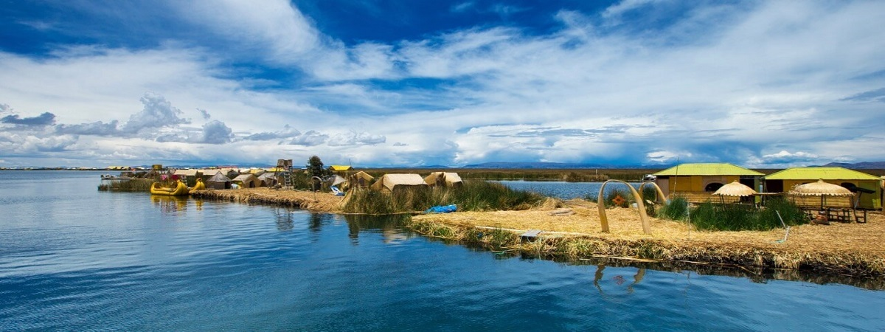

PUNO (PERÚ)
Fiesta y leyendas al pie del Titicaca
Se emplaza sobre la meseta andina, la ciudad de Puno está dominada por la presencia del Lago Titicaca, lugar sagrado de los incas y poblado de islas naturales y artificiales del Perú. Puno posee sitios arqueológicos prehispánicos de construcciones circulares llamadas desde su origen chullpas, que atraen el turismo cada año. Sus iglesias se caracterizan por una marcada arquitectura colonial. Es un pueblo orgulloso de su pasado quechua y aymara de tradición folclórica que se desborda cada año en danzas y ritos durante la Festividad Virgen de la Candelaria.
Puno es leyenda, fiesta multicolor, poblado de islas naturales y artificiales
Ubicación: Se ubica en la sierra sur del Perú, comparte frontera con Bolivia. Tiene un relieve básicamente plano debido a que buena parte del territorio se encuentra en la meseta del Collao.